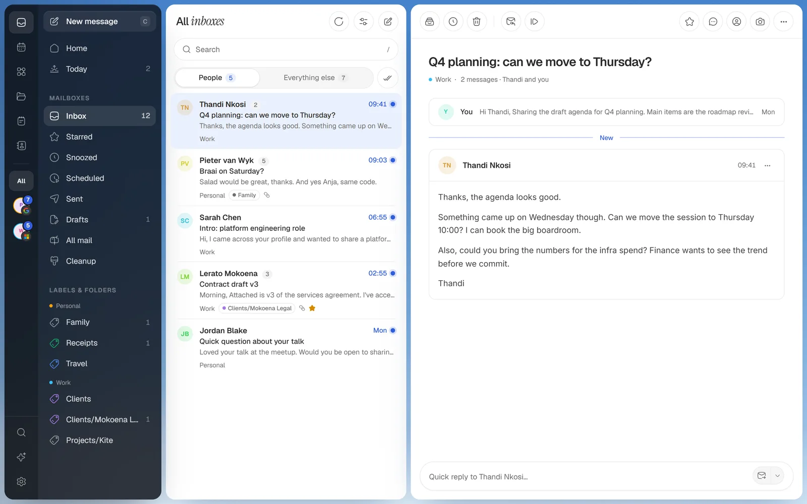

Email that flies.
A fast, keyboard-first email client. Your mail lives on your computer, so lists and search never wait on the network.

Your whole day, one key away.
Every view has its own shortcut, and every shortcut is yours to change. Nothing here is mocked up: it's the app.
Your mail, on your machine.
between checks for new mail, whether Kite is in front or not. Lists and search never wait for one.
I wanted email that keeps up with my keyboard, and doesn't need someone else's server to read my own mail.
So Kite keeps a copy of your mail on your computer and answers from it. The things I do every morning became views and automations, and AI stays a layer on top: it only runs when you click it.
Ask like Gmail. Answer from disk.
The same search words in every account, Outlook and IMAP too. A capital OR joins two terms, a - leaves one out.
It does the chores. You decide.
Build one by example: click what to read in a real email, then switch on what happens. No AI, no rules language, and Undo for every run.
What Kite does for you By itself
What waits for you When you say
Codes, meetings, mail. Up top.
A strip of Kite's sky floats at the top of your screen. A sign-in code drops in ready to copy, a meeting counts down with Join, and the mail you said matters comes with a quick reply. Any script on your PC can use it too.
Before you take off.
Which email accounts work?
Where does my mail live?
Do I need AI to use it?
"Windows protected your PC". Is it safe?
What about Mac?
Let your inbox catch the wind.
Connect an account in a minute. Your mail stays yours.